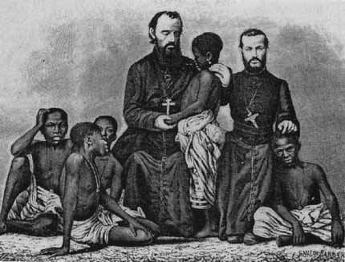
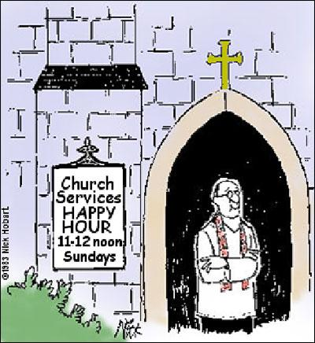

Four Mission Theology Principles
Mission theology has been one of the themes throughout the year in our course and in our reading. It has been essential to view our work with young people as mission work in our community. When you hear the word mission, many people get the image to the left, of pious white men bringing the message to the poor savage black person (you've got to love the condesending hand on the head!).
The other image you get is of churches running outreach programs from their buildings, doing anything to get the masses of unchurched in through the door so that they can tell them about Jesus. Churches no longer just put on concerts and have big events, they are now online trying to get people to download their message, or on the TV in the early hours of the morning ready to convert the insomniac or weary late night TV watcher.
Mission theology is more about taking the example that Jesus showed, of providing care to those in the margins by living with those in the margins. Maybe the goal is to bring those people into the centre, or maybe Jesus' goal was to make the margins the centre. That would fit with his upside down model he came to bring called the Kingdom of Heaven.
As you will see with my feedback from young people, I have applied Hospitality, Community, Servanthood and Empowerment as I have worked with young people this year.
Hospitality
This is one of the principles of mission theology I have picked up this year. Hospitality is the relationship of the host providing for the guest. It is also about providing care and kindness to anyone in need. Hospitality is one of the best ways to share your faith and is a common theme in the Bible (Deut 10:19; Lev 19:34; Luke 19:1-10; Luke 10:38-42; John 2:1-11). The Old Testament is all about caring for the alien and the widow. Jesus cared for those in the margins and even when he went to other people's places as a guest he ended up hosting awesome conversation.
This has been an aspect I have especially implemented with my 18+ Study Group. If you read the feedback you will see that the warmth and openness Jose and I have given with our house and our food has been a highlight of the study group.
I have also applied this to the way that I accept people into the programs I run at my agency. I try and make sure that everyone feels welcome and accepted no matter what their background or even how they behave at the program.
I have also tried to apply the idea into how I approach needs that arise, by trying to be hospitable in filling these needs, which falls into the servanthood category.
Servanthood
The idea of a servant leader is a term thrown around by many people and can sometimes be misinterpreted as a leader that gets walked all over. The example Jesus shows is a leader who is willing to walk alongside those he cares about, standing up to injustices (Mat 21:12, Mark 4:39) yet willing to lay down his life to save those he came to lead.
Now I'm not saying I'm anything close to Jesus, but I have taken his example expressed in the Beatitudes (Mat 5:3-12) and tried to apply them to how I do life and lead the programs I am responsible for.
The way I have done this is by listening to the needs of those in the program and trying to help with those needs. One young person was feeling disillusioned with a program he was attending and wanted to leave. I simply invited him into a role in which he would be able to serve and within that I was able to provide a connection to the wider community.
Servanthood means being accessible and open to meeting the needs of people as they arise. I have acheived this by starting the 18+ study group and being available after a program to provide support for young people wanting to discuss issues. Recently I have had young people coming and asking for prayer and advice around exams.
Servanthood means being humble. One of the hardest things this year has been being told that I am "just an intern" and "I am here to learn". This is true but hearing it can hurt someone who is an intern but at the same time has something to say and is capable, just lacking in experience.
This servant leadership leads naturally to wanting others to reach their potential which is all about empowering them to do their best.
Empowerment
Empowerment is one of my favourite aspects of mission. It is not about me trying to run everything and fulfilling everyone's needs through servanthood, its actually about me helping others reach their potential without rescuing them.
This is how Jesus did it, he helped people acheive their potential without just rescuing them all the time. He discipled his disciples, giving them some skills and teaching them how to become fishers of men and then he let them go out and have a go by themselves (Luke 9), bringing them back for more training and then sending them out again.
This is what all my programs have been about. The 18+ Study Group is discussing issues around how to be Christians in the real world. The way I run Dynamyte has been with a view to empowering young people to be the best they can be. I have several young leaders who help me with this program and they take turns facilitating it. This is not about training them as youth leaders but about giving them responsibilities and opportunities to control what is going on.
The highlight of my efforts to empower young people came on Sunday night when one of the music groups I have worked with this year stood up and did the music without me. I was hugely proud of these guys doing it their way, doing it well and only requiring me now for some overall guidance.
This aspect of empowering young people to be the best that they can be has the bonus of working towards a genuine and strong community.
Community
Community is one of the key themes we have studied in all the programs that I have run. Being part of the Body of Christ (1 Cor 12:12-27, Col 1:18) means to be in genuine community with each other: to be in a relationship with God and each other which will be perfected when Christ returns.
My foray into community building has been frustrating. I have tried to view community as a group of different people coming together for a united cause. The problem with this is that different people bring different baggage and different expectations of what a community should be.
I have enjoyed watching as my Dynamyte young people have become more comfortable around each other. The last night of the year consisted of a bunch of games and some food. The kids were content in just catching up with each other after a hard week and sharing some kai together.
It has also been hard as I have watched erruptions in other groups between two individuals deciding not to like each other, with one asking to remove himself from the community. This was heart wrenching as in that group we had just discussed the hard truth about different people meeting together and the need for forgiveness. I felt like throwing in the towel as these two people decided that they didn't want the other one in the community. This frustrated me because community should be all inclusive, not a thing that is used to filter who belongs.
The study into mission theology has also impacted what I have pushed and dropped back from in my programs. Dynamyte has had issues arise with me wanting to reach community kids that have been given up on by everyone else and haven't had the opportunites the rich church kids had. I have also pulled out of pushing for a youth worker in the Fairfield community, even if it might have cost me a job, because I would much rather focus on reaching the margins in Mosgiel rather than the affluent in Fairfield.